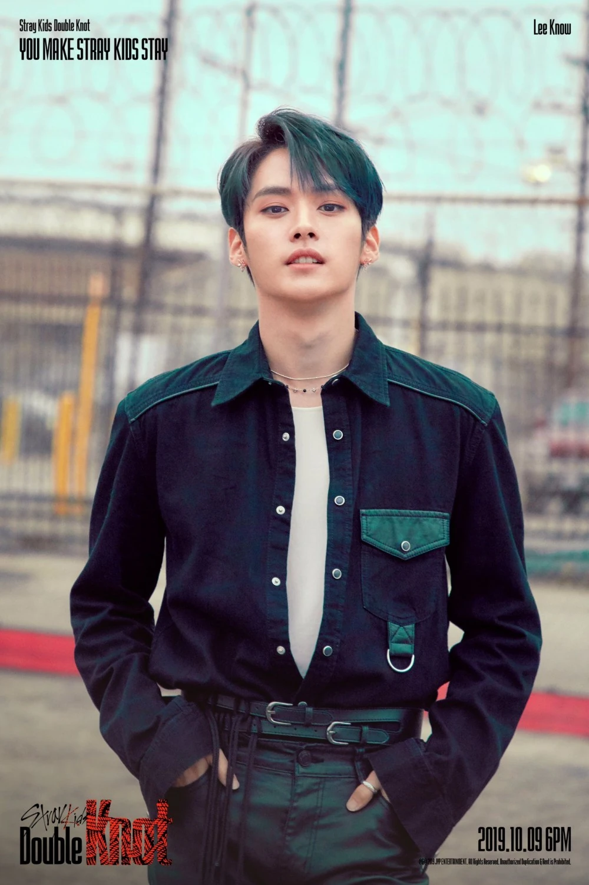
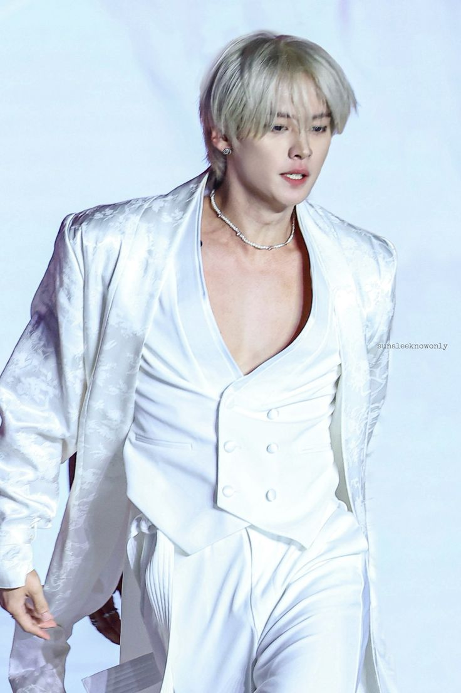

Lee Know
Perfil
Nombre real: 이민호 / Lee Min Ho
Apodos:Lino, Minho
Profesión: Rapero, Cantante y Bailarín.
Fecha de nacimiento: 25-Octubre-1998 (27 Años)
Lugar de nacimiento: Gimpo, Corea del Sur
Estatura: 172 cm
Peso: 58 kg
Tipo de sangre: O
Signo zodiacal: Escorpio
Signo zodiacal chino: Tigre
Familia: Padres.
Agencia: JYP Entertainment
Programas de TV
Show! Music Core (MBC, 2021-2023) MC junto a Jung Woo y Min Ju
Show! Music Core (MCB, 2023) MC junto a Jung Woo y Sull Yoon
Stray Kids (Mnet, 2017)
Programa de Radio
(MBC) Idol Radio (09.02.2019) Ep. 129 junto a Hyun Jin y Ji Beom de Golden Child
(SBS Radio) NCT Night Night (09.09.2018) junto a Bang Chan, Woo Jin y Chang Bin
Anuncios
2018: Ceci Korea junto a Hyun Jin
Curiosidades
Estudios:Escuela Secundaria Técnica Gimpo Jeil (Graduado).
Periodo de entrenamiento: 4 meses.
Modelo a seguir: Taecyeon de 2PM.
Hobbies: Hacer coreografías, tomar fotografías, ver anime y películas.
Color favorito:Azul menta.
Idiomas: Coreano (Lengua materna), Japonés (intermedio) e Inglés (básico).
Lema:"Vamos a comer y vivir bien"
Mascotas:Tres gatos, Soonie, Doongie y Dori.
Fue bailarín de respaldo de BTS en el 2016 durante un cover de Rainism de Rain en Mnet y durante
su gira 2017 BTS Live Trilogy Episodio III: The Wings Tour en Japón, en ese momento se dio cuenta de
que quería ser cantante y ser la estrella del escenario.Fue bailarín de respaldo de BTS en el 2016
durante un cover de Rainism de Rain en Mnet y durante su gira 2017 BTS Live Trilogy Episodio III:
The Wings Tour en Japón, en ese momento se dio cuenta de que quería ser cantante y ser la estrella del escenario.
Antes de debutar, trabajó en un local de barbacoa.
Si no fuera idol, sería bailarín.
Es ambidiestro.
Fue el primer miembro en ser eliminado en el episodio 4 del programa de supervivencia Stray Kids.
En el episodio 9 del programa, J.Y. Park les dio a él y a Felix una nueva oportunidad para debutar
junto a los demás si lo hacían bien durante la presentación en vivo del último episodio.
Hizo la coreografía para "Hellevator", canción de Stray Kids
Tiene 4 canciones con derechos de autor a su nombre según la Asociación de Derechos de Autor de Música de Corea.
Apadrinó a un niño de África y ayuda a más niños con donaciones para su salud y educación según la
entrevista que dio para la revista ARENA homme.
imágenes



